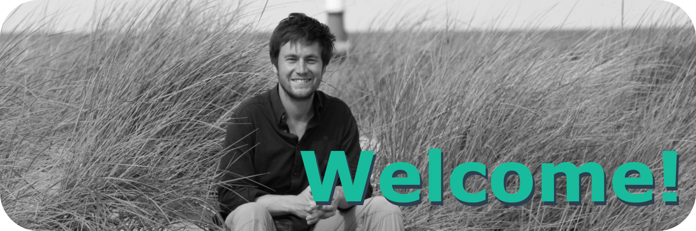

Please find a complete and detailed CV including publication list here
2018
PhD Chemical Oceanography
Leibniz-Institute for Baltic Sea Research Warnemünde (IOW)
Supervisor: Prof. Dr. Gregor Rehder
Title: Ocean Acidification in the Baltic Sea: Involved Processes, Metrology of pH in Brackish Waters, and Calcification under Fluctuating Conditions
Grade: With honors (Summa cum laude)
2012
MSc Biological Oceanography
GEOMAR Helmholtz Centre for Ocean Research Kiel
Grade: 1.2 (ECTS grade A “Excellent”)
2009
BSc Chemistry
Phillips-University Marburg
Grade: 1.7 (ECTS grade B “Very good”)
2008
Intermediate diploma Chemistry
Humboldt-University of Berlin
Grade: 2.0 (ECTS grade B “Very good”)
Since 2018
PostDoc
Leibniz-Institute for Baltic Sea Research Warnemünde (IOW)
EU project BONUS INTEGRAL
2014 – 2018
PhD student
Leibniz-Institute for Baltic Sea Research Warnemünde (IOW)
EU project BONUS PINBAL
2013 – 2014
Scientific Employee
GEOMAR Helmholtz Centre for Ocean Research Kiel
Benthic Ecology | Prof. Dr. M. Wahl
Marine Biogeochemistry | Prof. Dr. U. Riebesell
2013
Sailing Instructor
Kiel Marketing GmbH | Camp 24/7
2013
Divemaster
Al Dive dive centre, Loubiere, Dominica
2010
Research Assistant
GEOMAR Helmholtz Centre for Ocean Research Kiel
Evolutionary Ecology of Marine Fishes | Prof. Dr. T. Reusch
2019
SPECTROPHABS (Spectrophotometric pH-measurements for monitoring of marine acidification in the Baltic Sea)
Co-applicant
2018
Early-Career Grant
National Geographic Society
Financial and outreach support for Bloomsail expedition
2010-2018
German Academic Scholarship Foundation (Studienstiftung des deutschen Volkes)
2019
Briese Award
for outstanding PhD thesis in Marine Research
2019
Dissertation award
German Water Chemical Society
sponsored by Walter-Kölle foundation
2019
Dissertation award
Baltic Sea Research Foundation
2017
Best poster presentation by newcomers
Baltic Sea Science Congress
2005
Book-price for extraordinary achievements during the Abitur
2011
Certified Scientific Diver
200+ logged dives, dive mission leader, Nitrox-diver
Expeditions:
Off-shore mesocosm experiment, Gran Canaria, Spain (2 months)
Huinay Scientific Field Station, Patagonia, Chile (3 months)
Since 2010
Member of the Academic Sailing Association in Kiel (ASViK e.V.)
Several sailing campaigns including ocean crossings
Holder of boat driver, safety and radio certificates
2006 - 2009
Founder and Chairman of Growtogether e.V
Association to support developmental cooperation